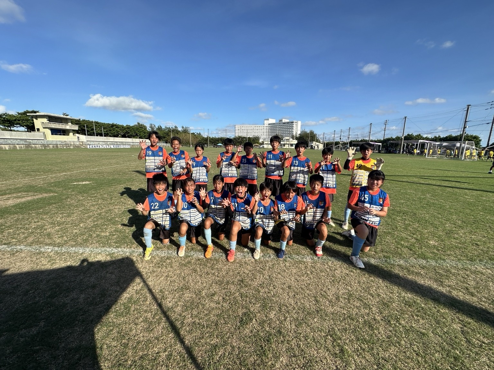

FURUGEN MINAMI FC · YOMITAN, OKINAWA
サッカーを楽しむ。
仲間と成長する。
沖縄・読谷村から未来へ。
仲間とともに、夢に向かって全力で。
ONE TEAMONE DREAM
TEAM PHOTO
古堅南FCの仲間たち
サッカーを楽しみ、挑戦し、仲間と一緒に成長しています。

FURUGEN MINAMI FC · YOMITAN, OKINAWA
沖縄・読谷村から未来へ。
仲間とともに、夢に向かって全力で。
TEAM PHOTO
サッカーを楽しみ、挑戦し、仲間と一緒に成長しています。
